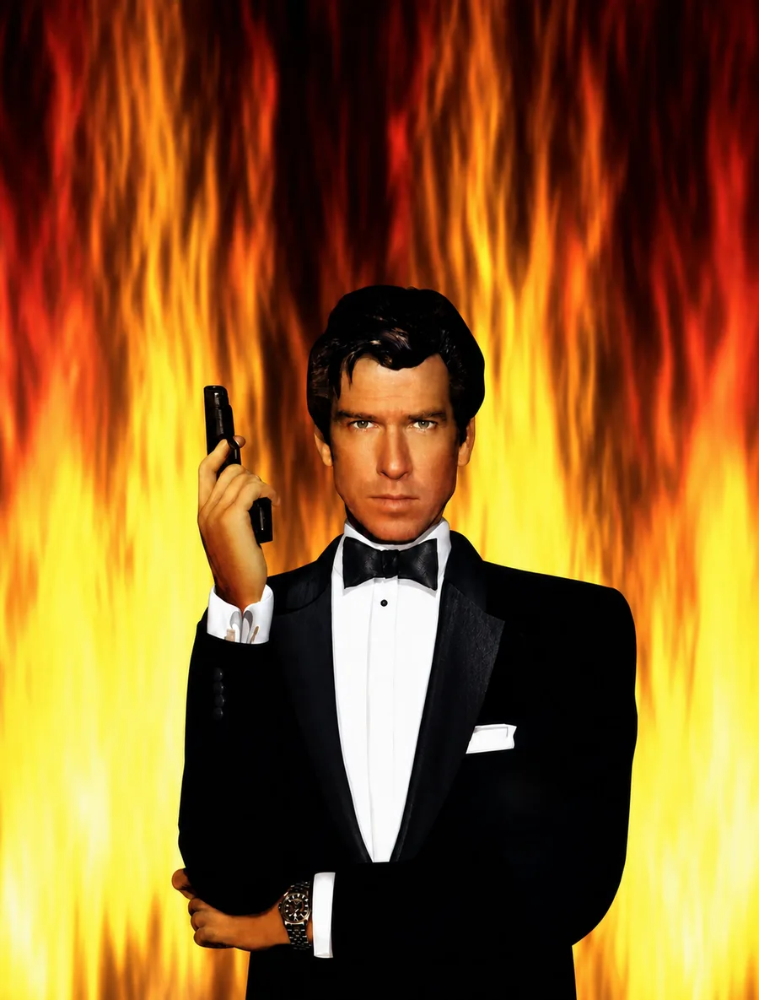

Tools of the Trade
- RR-000
- Filed
- Format
- Composite render
- Method
- Magazine scans and official renders
An earlier presentation pass, assembled from collected print and official-render references before the Conker skybox extraction.

Original upload: full-size image on Imgur (opens in a new tab). The copy shown here is kept with the site in images/tools-of-the-trade-composite.webp.
Next filing: RR-001, Conker’s Skyboxes, seven panoramas pulled from the Conker’s Bad Fur Day ROM. Back to Render Restore.